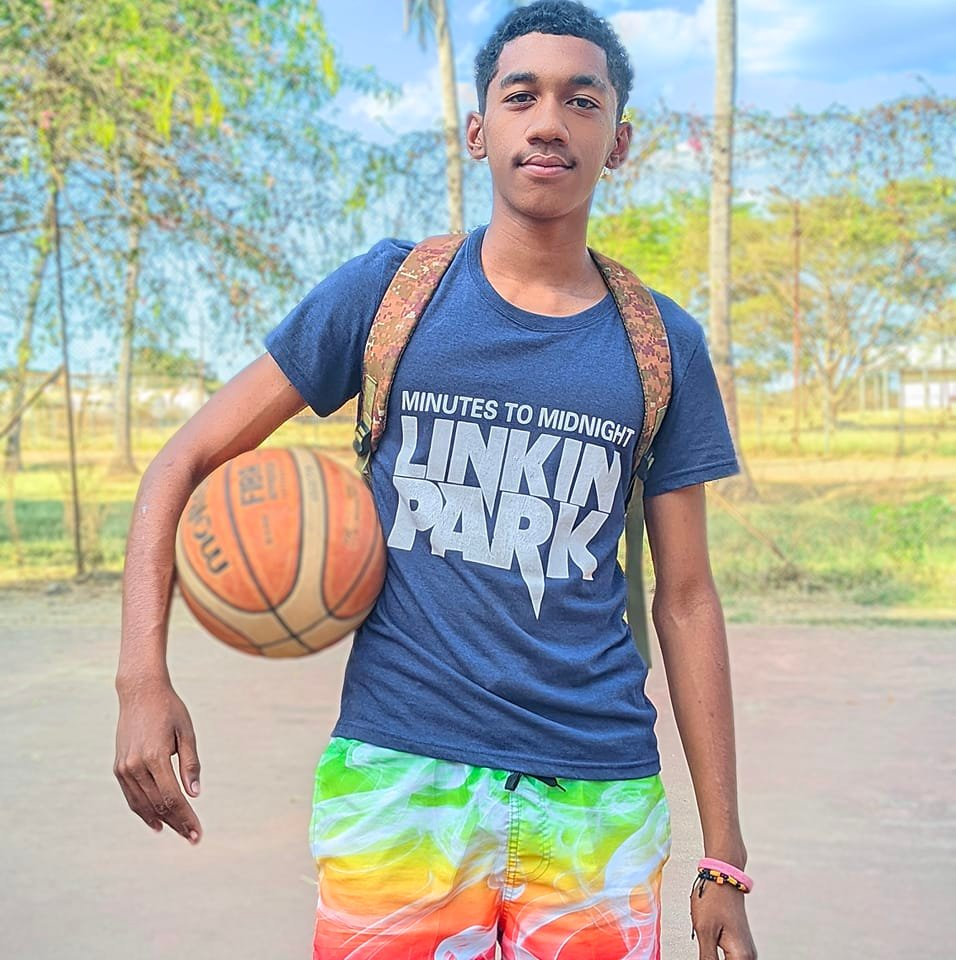

Piano

Le piano occupe une place importante dans ma vie. À travers la musique, je développe ma concentration, ma sensibilité et ma discipline.
Depuis mon enfance, jouer me permet de m’exprimer et de trouver un équilibre entre études et passion.
Basket-ball

Le basket-ball est le sport que j’apprécie le plus. Il m’aide à développer l’esprit d’équipe, la persévérance et la détermination.
En plus d’être bénéfique pour la santé, il m’apprend à rester constant et combatif face aux défis.